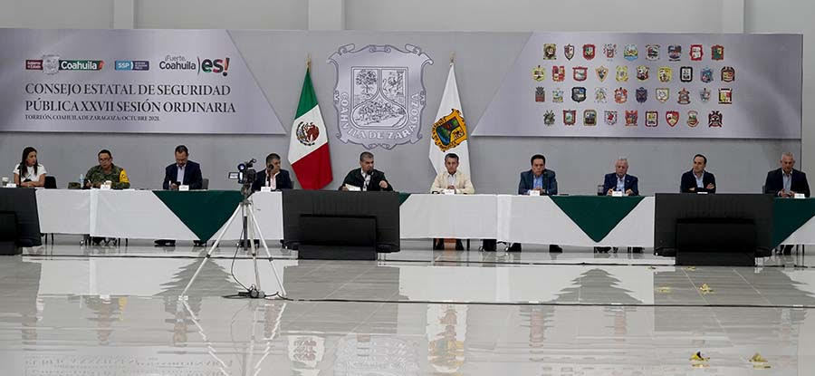
CAPÍTULO 2. JUSTICIA EFICIENTE
En el Poder Judicial del Estado de Coahuila de Zaragoza efectuamos en 2021 diversas actividades a fin de fortalecer la eficiencia en la impartición de justicia. Todas las personas merecen un sistema judicial que sea capaz de garantizarles la rápida respuesta a sus problemas y por lo tanto la protección más amplia de sus derechos, a través de instancias que se desempeñen con valores como la imparcialidad, la honestidad, la objetividad y el profesionalismo.
La estructura de este poder público nos permite tomar líneas de acción tanto en los órganos jurisdiccionales como en aquellos no jurisdiccionales y administrativos, que trasciendan en la eficiencia y rapidez con la que se imparte la justicia de manera local. Bajo esa tesitura, en este apartado informamos los avances logrados este año al interior del máximo órgano colegiado, las acciones que se tomaron por parte de Consejo de la Judicatura en el rubro de vigilancia y disciplina de las y los funcionarios públicos, los resultados en la estrategia de estrechar lazos colaborativos con otras instancias públicas y privadas, y las actividades desarrolladas por el titular de la Presidencia del Tribunal Superior de Justicia, así como de las magistradas y magistrados en la conformación de comisiones.
PARTICIPACIÓN EN LA MESA DE COORDINACIÓN PARA LA CONSTRUCCIÓN DE LA PAZ
El Poder Judicial del Estado como instancia pública apoya en el combate que el gobierno tiene contra la violencia y la delincuencia. Así, durante este año participamos en 47 reuniones de la Mesa de Coordinación para la Construcción de la Paz, y destacamos que, derivado de las acciones tomadas por los diversos órdenes gubernamentales en este tema, se ha incidido de manera directa en la reducción de los índices de delitos que generan las causas atendidas en los juzgados en materia penal.
PARTICIPACIÓN EN EL SISTEMA ESTATAL ANTICORRUPCIÓN
El Poder Judicial participó en las actividades propias del Comité Coordinador de este sistema y en su órgano de gobierno, y durante este año avanzamos en la construcción del Programa de Implementación de la Política Estatal Anticorrupción, la cual fue aprobada durante 2021. Para este fin, fueron designados funcionarios adscritos a esta institución, participando en mesas de trabajo presenciales y virtuales en las cuales se desarrollaron, en conjunto con las demás instituciones, las prioridades estratégicas y líneas de acción que se desprenden de esta política estatal.
PLENO DEL TRIBUNAL SUPERIOR DE JUSTICIA
El Pleno del Tribunal Superior de Justicia es el órgano colegiado de mayor jerarquía dentro del Poder Judicial local. Se precisa que durante 2021 celebramos 47 sesiones ordinarias, a través de las cuales pudimos atender en tiempo y forma todos los asuntos que conforme a las leyes tenemos encomendados, respecto de los cuales emitimos 209 acuerdos correspondientes a actividades jurisdiccionales y administrativas. Derivado de lo anterior, otorgamos la autorización para incluir a la Lista de Auxiliares de la Administración de la Justicia a 76 profesionistas en diversas materias, así como a tutores, albaceas e interventores.
También, específicamente en lo que respecta a la función jurisdiccional en segunda instancia, realizamos 11 sesiones en las que emitimos 27 acuerdos. Dentro de las mismas logramos dar atención a cinco acciones de inconstitucionalidad y a dos recursos de reclamación, de los cuales se resolvió uno de cada uno.
Este año, además, integramos 249 expedientes auxiliares y emitimos dentro de los mismos mil 826 acuerdos; y admitimos cinco excitativas de justicia en apoyo de las autoridades federales, así como de los particulares que presentaron quejas en contra de algún servidor público. Igualmente, como parte del trámite para obtener la patente de notario, este año autorizamos 11 procedimientos judiciales, así como tres procedimientos administrativos disciplinarios.
LABORES DESARROLLADAS POR LA SECRETARÍA GENERAL DE ACUERDOS DEL PLENO DEL TRIBUNAL SUPERIOR DE JUSTICIA DEL ESTADO
Este año, a través de la Secretaría General de Acuerdos del Pleno, diligenciamos o mandamos a diligenciar 789 exhortos, 14 cartas rogatorias, 114 incompetencias y 19 legalizaciones de firmas. Además, para completar el proceso mediante el cual los profesionistas del derecho pueden ejercer como litigantes en el Poder Judicial del Estado, este año registramos 558 títulos de abogados y expedimos gratuitamente las constancias correspondientes.
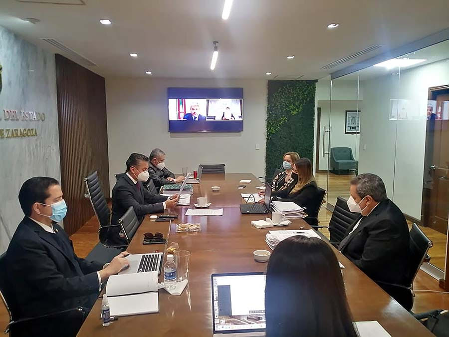
CONSEJO DE LA JUDICATURA
La administración, vigilancia y disciplina de los órganos jurisdiccionales que integran el Poder Judicial se atribuye al Consejo de la Judicatura del Estado, el cual constituye un órgano de gobierno judicial que a través de la emisión de sus acuerdos es el encargado de la toma de decisiones en estos rubros, mediante la aprobación colegiada por parte de sus integrantes.
Con el fin de garantizar el respeto a los derechos humanos y el acceso a la justicia, el Consejo de la Judicatura emite sus acuerdos de forma tal que su labor permee en el actuar jurisdiccional y administrativo, logrando así una justicia pronta, expedita y accesible a la ciudadanía.
Uno de los principales objetivos planteados por el Consejo de la Judicatura es implementar las medidas administrativas y normativas necesarias para que la impartición de justicia para los coahuilenses sea de calidad, eficiente y moderna, y se ejerza bajo los más altos estándares nacionales e internacionales.
Durante el año 2021 en este órgano colegiado se celebraron 15 sesiones, en las que sus integrantes emitieron un total de 176 acuerdos.
A continuación, se expone la actividad que el Consejo de la Judicatura desempeñó durante este año en cada uno de sus rubros.
Rubro de administración
Dentro de las funciones que le han sido conferidas al Consejo de la Judicatura, en materia administrativa, en 2021 sostuvimos líneas de acción en aspectos como el Plan de acción COVID-19, la justicia digital, la igualdad de género, la actualización del marco normativo interno y la creación de órganos administrativos y judiciales.
Plan de acción COVID-19
El Plan de acción COVID-19 es una estrategia de prevención y contención ante la actual emergencia sanitaria, el cual fue implementado al interior de este poder público a iniciativa del consejero Miguel Felipe Mery Ayup, presidente del Consejo de la Judicatura del Estado de Coahuila de Zaragoza desde abril del 2020.
Con el fin de dar continuidad a este plan, el Pleno del Consejo de la Judicatura emitió el Acuerdo C-046/2021 en la sesión celebrada el 21 de abril de 2021, mediante el cual se aprobaron los Lineamientos que regulan las actividades del Poder Judicial del Estado de Coahuila de Zaragoza durante el nivel bajo de riesgo epidémico, del semáforo de riesgo epidémico derivado del virus SARS-CoV-2 (enfermedad de COVID-19), que nos permitieron adecuar nuestras actividades judiciales, protegiendo en todo momento la salud de las y los usuarios del servicio de impartición de justicia, así como de las personas servidoras públicas que trabajan en el Poder Judicial.
Justicia digital
En el rubro de la justicia digital –hacia la que ha transitado el Poder Judicial del Estado de Coahuila de Zaragoza– el Consejo de la Judicatura, por iniciativa de su Presidente, emitió los siguientes acuerdos para continuar con esta innovación:
- Acuerdo C-035/2021, emitido en la sesión celebrada el 24 de marzo de 2021, mediante el cual se aprueba la reforma del Reglamento de las Centrales de Actuarios del Poder Judicial del Estado de Coahuila de Zaragoza para implementar las boletas electrónicas de gestión actuarial.
- Acuerdo C-096/2021, aprobado en la sesión del 15 de julio de 2021, mediante el cual se da seguimiento a la implementación del Sistema Integral de Búsqueda de Expedientes y Digitalización, y se expiden las Reglas de Operación de la Comisión Interdisciplinaria de Archivos del Poder Judicial del Estado de Coahuila de Zaragoza.
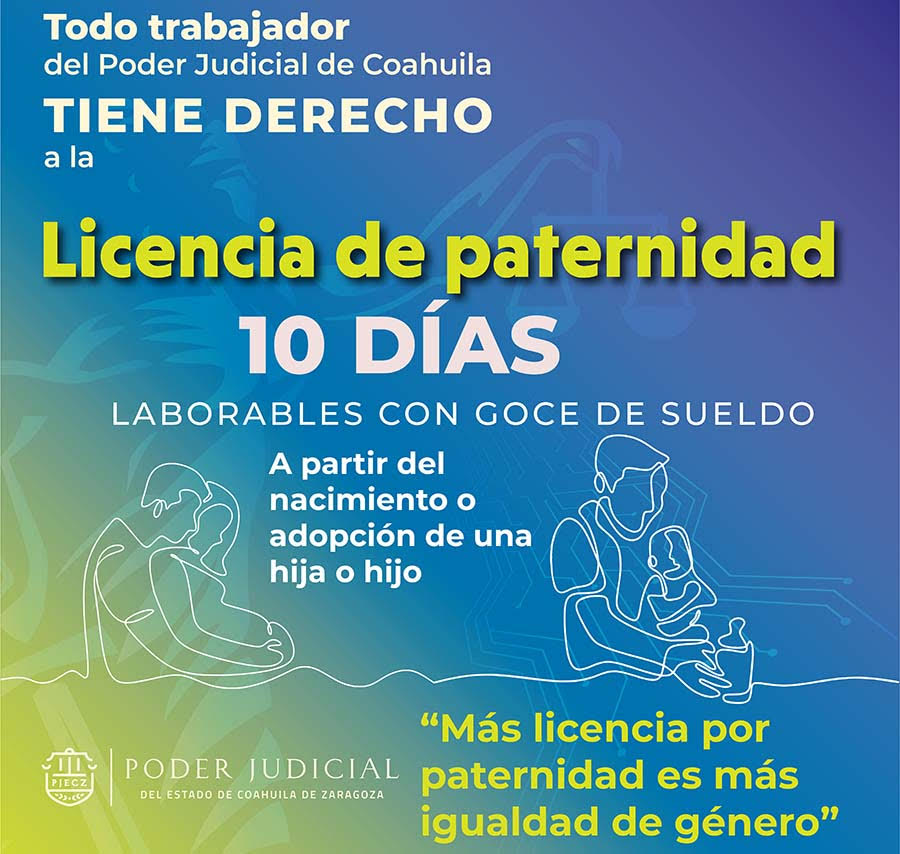
Igualdad de género
En materia de igualdad de género, desde el Consejo de la Judicatura avanzamos en dos aspectos importantes, que refrendan el compromiso de este poder público para lograr al interior verdaderas condiciones de igualdad entre nuestro personal, así como al exterior, con acciones que favorecen a las y los ciudadanos.
El primero, respecto a las licencias de paternidad, en el cual, como medida normativa, se aprobaron los lineamientos que regulan su otorgamiento al personal masculino. Con ello buscamos brindar certeza y seguridad jurídica de igualdad entre el hombre y la mujer dentro del ámbito familiar y, a la vez, proteger a los hijos y a las hijas, permitiendo que ambos progenitores sean corresponsables en su cuidado postnatal.
El segundo aspecto consiste en la implementación del programa de sesiones de acompañamiento jurídico para mujeres en procedimientos jurisdiccionales, para lo cual el Consejo de la Judicatura aprobó el acuerdo C-162/2021 en la sesión del 24 de noviembre. Este programa, operado por el Instituto Coahuilense de las Mujeres, el Centro de Justicia y Empoderamiento para las Mujeres del Estado y nuestra Unidad de Derechos Humanos e Igualdad de Género, tiene como objeto dar asistencia a mujeres en situación de vulnerabilidad, que son parte en procedimientos judiciales ante nuestros juzgados de primera instancia en materia familiar del modelo de justicia oral, y que requieren una atención efectiva que propicie la agilización en la resolución de estos asuntos.
Actualización del marco normativo interno
Las disposiciones normativas que regulan la estructura interna del Poder Judicial, y establecen las facultades de nuestras funcionarias y funcionarios, requieren de actualización constante que nos permita dar cumplimiento a nuestros objetivos. En ese sentido, el Pleno del Consejo de la Judicatura emitió los siguientes acuerdos:
- Acuerdo C-045/2021, emitido en la sesión celebrada el 21 de abril de 2021, mediante el cual se aprueba la reforma del Reglamento Interior de la Secretaría Técnica y de Transparencia de la Presidencia del Tribunal Superior de Justicia del Estado de Coahuila de Zaragoza.
- Acuerdo C-051/2021, pronunciado el 28 de abril de 2021, con el cual se aprueba el Reglamento de la Visitaduría Judicial General del Poder Judicial del Estado de Coahuila de Zaragoza.
- Acuerdo C-070/2021, emitido en la sesión celebrada el 28 de mayo de 2021, mediante el cual se aprueban los Lineamientos para el uso de los medios electrónicos en las notificaciones, citatorios y demás comunicaciones del Consejo de la Judicatura del Estado de Coahuila de Zaragoza.
- Acuerdo C-122/2021, presentado en la sesión celebrada el 15 de septiembre de 2021, con el cual se reforma el Reglamento de las Oficialías de Partes del Poder Judicial del Estado de Coahuila de Zaragoza.
- Acuerdo C-143/2021, emitido en la sesión celebrada el 27 de octubre de 2021, mediante el cual se reforma el Reglamento Interior del Instituto de Especialización Judicial del Tribunal Superior de Justicia del Estado de Coahuila de Zaragoza.
Creación de órganos administrativos y jurisdiccionales
Conforme a las necesidades de servicio y atención que fueron detectadas el año anterior, el Consejo de la Judicatura este 2021 tuvo a bien aprobar mediante los acuerdos correspondientes la creación de dos órganos que facilitarán la función del Poder Judicial. Así, en mayo emitimos el Acuerdo C-069/2021, mediante el cual se aprueba la creación de la Unidad de Apoyo a lo Jurisdiccional del Poder Judicial del Estado de Coahuila de Zaragoza, con el propósito de fungir como enlace entre la Oficialía Mayor y los órganos jurisdiccionales y administrativos, para coadyuvar en los modelos de gestión de tales instancias.
Posteriormente, en septiembre aprobamos el Acuerdo C-123/2021, a fin de establecer la creación del Juzgado Quinto de Primera Instancia en Materia Civil del Distrito Judicial de Torreón, para contribuir en la agilización en el trámite de los asuntos y disminuir la carga laboral del resto de los órganos en esta materia.
Otros temas relevantes
El Consejo de la Judicatura también emitió acuerdos que impactan y trascienden en el servicio que se presta a la ciudadanía, y en la colaboración con otros poderes e instituciones públicas estatales y nacionales, que sin duda fortalecen el sistema de justicia local. En ese rubro destacamos los siguientes acuerdos:
Tabla 8. Acuerdos emitidos por el Consejo de la Judicatura en temas relevantes
| Acuerdo | Fecha | Objetivo |
|---|---|---|
| C-0007/2021 | 29 de enero | Establecer la gratuidad de la consulta de expedientes en el Archivo General Judicial y en los Archivos Regionales y Distritales del Poder Judicial del Estado de Coahuila de Zaragoza |
| C-034/2021 | 24 de marzo | Definir las bases que deben considerarse para integrar el Tribunal de Enjuiciamiento de manera unitaria o colegiada en los Juzgados de Primera Instancia en Materia Penal del Sistema Acusatorio y Oral, lo cual permite desahogar la carga laboral en estos juzgados y dar atención a más personas |
| C-050/20221 | 16 de abril | Ratificar los lineamientos para la emisión de constancias que acrediten la existencia, o inexistencia, de una sentencia ejecutoriada por la que una persona candidata del proceso electoral local ordinario 2021 haya sido sancionada o condenada por violencia familiar, delitos sexuales o por incumplimiento de obligaciones alimentarias |
Fuente: Consejo de la Judicatura del Estado de Coahuila de Zaragoza. 2021.
Atención a juicios de amparo
Debido a que el Consejo de la Judicatura es considerado una autoridad, sus decisiones son posibles de impugnar a través del juicio de amparo. En ese sentido, participamos en 23 juicios de esta naturaleza, de los cuales dos ya fueron resueltos al pronunciarse el órgano jurisdiccional federal a favor del sobreseimiento de los mismos.
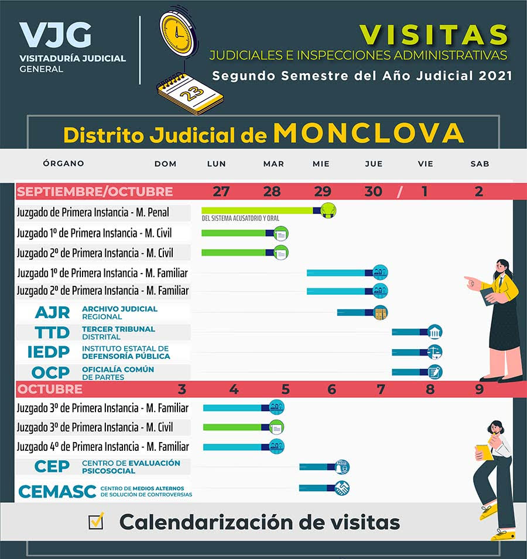
Rubro de vigilancia, acciones desarrolladas por la Visitaduría Judicial General
La Visitaduría Judicial General, como órgano auxiliar del Consejo de la Judicatura, tiene la facultad de supervisar el adecuado funcionamiento de los órganos del Poder Judicial, así como la vigilancia del desempeño del personal y las condiciones de trabajo en los mismos.
Para dar cumplimiento a esta labor durante el 2021, realizamos la modificación del marco normativo que rige la actuación de la Visitaduría, para ampliar sus facultades y realizar también visitas de inspección a los órganos no jurisdiccionales y administrativos, tales como el Centro de Medios Alternos de Solución de Controversias, el Centro de Evaluación Psicosocial, el Instituto Estatal de Defensoría Pública y el Archivo Judicial General.
Además se estableció la creación del Comité Consultivo de Visitas, Inspecciones y Objetivos Disciplinarios, para proponer estándares y buenas prácticas en los ejercicios de las visitas e inspecciones a realizar.
En ese sentido, la Visitaduría propone políticas públicas para el mejoramiento del funcionamiento de los órganos jurisdiccionales y no jurisdiccionales, a partir de la elaboración de indicadores y criterios de evaluación del desempeño de las y los servidores públicos supervisados.
En lo que respecta al rubro de visitas judiciales e inspecciones administrativas, el Consejo de la Judicatura aprobó los siguientes acuerdos:
- Acuerdo C-051/2021, emitido en la sesión celebrada el 28 de abril de 2021, mediante el cual se aprueba el Reglamento de la Visitaduría Judicial General del Poder Judicial del Estado de Coahuila de Zaragoza.
- Acuerdo C-111/2021, presentado el 25 de agosto de 2021, con el cual se aprueba el Manual de visitas judiciales e inspecciones administrativas de la Visitaduría Judicial General del Poder Judicial del Estado de Coahuila de Zaragoza y, en ese sentido, el acuerdo firmado por el Consejero Presidente, mediante el cual establecen los criterios de evaluación adicionales a este manual.
Además se realizaron dos periodos de visitas e inspecciones: el primero, en abril de 2021, el cual se realizó antes de las reformas mencionadas, por lo que solo se visitaron los órganos jurisdiccionales; y el segundo, en agosto, haciendo visitas a los órganos jurisdiccionales, no jurisdiccionales y administrativos.
Por lo antes descrito, actualmente las visitas judiciales ordinarias se desarrollan con modelos específicos diseñados para cada órgano jurisdiccional. Además de la revisión de expedientes en los que se haya dictado sentencia, se incorporó un muestreo de prevenciones, admisiones, excusas, desechamientos, recusaciones e incidentes. En este año, pasamos de 61 a 95 órganos visitados.
Como resultado del nuevo proceso de visitas e inspecciones podemos destacar que los órganos del Poder Judicial se encuentran sujetos al escrutinio de los justiciables y a los procesos propios de revisión institucional, reforzando así la apertura de este poder público y su transparencia.
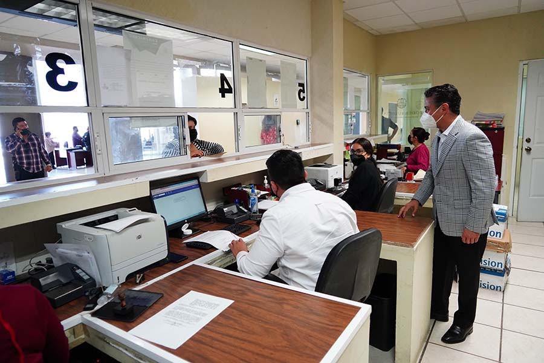
Rubro de disciplina
Una de las principales tareas del Consejo de la Judicatura es vigilar que el quehacer de los servidores públicos se guíe por los valores y principios de legalidad, profesionalismo, honradez, honestidad, responsabilidad, diligencia, respeto, justicia y equidad.
En este rubro, en estricto apego al debido proceso y la protección de las garantías judiciales de las personas servidoras públicas, a quienes se les atribuye alguna comisión de faltas administrativas previstas en la Ley Orgánica del Poder Judicial del Estado de Coahuila de Zaragoza, el Consejo de la Judicatura tramita un procedimiento materialmente jurisdiccional.
a) Procedimientos disciplinarios
En 2021 admitimos 156 denuncias o quejas planteadas por los justiciables en contra de servidores adscritos a este poder. Resolvimos 264 expedientes administrativos que corresponden al 2021, para los cuales emitimos 284 resoluciones, debido a que algunos de los expedientes se instruyeron en contra de varias personas; así como de años anteriores, en los siguientes rubros:
Tabla 9. Expedientes administrativos y auxiliares resueltos
| Rubro | Cantidad |
|---|---|
| Inicio de procedimientos (algunos se instruyen contra dos o más servidores públicos) | 42 |
| No inicio de procedimiento | 8 |
| Improcedentes | 151 |
| Sin materia | 44 |
| Falta de competencia | 3 |
| Prescripción | 4 |
| Se desecha el escrito de queja | 2 |
| Total | 254 |
Fuente: Consejo de la Judicatura del Estado de Coahuila de Zaragoza. 2021.
Tabla 10. Sanciones impuestas por el Consejo de la Judicatura
| Rubro | Cantidad |
|---|---|
| Apercibimiento | 11 |
| Suspensión | 1 |
| Absolutorias | 17 |
| Destitución | 1 |
| Total | 30 |
Fuente: Consejo de la Judicatura del Estado de Coahuila de Zaragoza. 2021.
Tabla 11. Procedimientos administrativos atendidos
| Tipo | Cantidad |
|---|---|
| En trámite para recabar medios de prueba para mejor proveer respecto al inicio, o no, del procedimiento disciplinario | 128 |
| Expedientes turnados a la Comisión de Vigilancia y de Disciplina para que elabore el proyecto de inicio, de no inicio o de improcedencia, según sea el caso | 6 |
| Expedientes turnados a la Comisión de Vigilancia y de Disciplina para que elabore el proyecto de resolución definitiva que corresponda | 7 |
| Total | 141 |
Fuente: Consejo de la Judicatura del Estado de Coahuila de Zaragoza. 2021.
b) Expedientes auxiliares disciplinarios
Además, en 2021 radicamos 31 expedientes auxiliares y resolvimos 27, incluyendo de años anteriores, con relación a declarar sin materia el procedimiento por falta de ratificación del escrito de queja, incompetencia, falta de pruebas o porque se le dio un número de expediente administrativo disciplinario. A la fecha se encuentran en trámite los siguientes expedientes auxiliares:
Tabla 12. Expedientes auxiliares disciplinarios
| Estatus | Cantidad |
|---|---|
| Pendientes de resolver del 2021 | 3 |
| Pendientes de resolver de años anteriores | 1 |
| Total | 4 |
Fuente: Consejo de la Judicatura del Estado de Coahuila de Zaragoza. 2021.
c) Atención a juicios de amparo en los asuntos disciplinarios
En lo que respecta a la atención y tramitación de los juicios de amparo en los que el Consejo de la Judicatura fue señalado como autoridad responsable, en la actualidad se tienen 32 asuntos: siete corresponden a juicios iniciados en el 2021, ocho al 2020, 16 al año 2019 y uno al año 2017.
Cabe precisar que este año resolvimos 18 juicios de amparo, los cuales correspondían a años anteriores: dos de 2017, 15 de 2019 y uno de 2020.
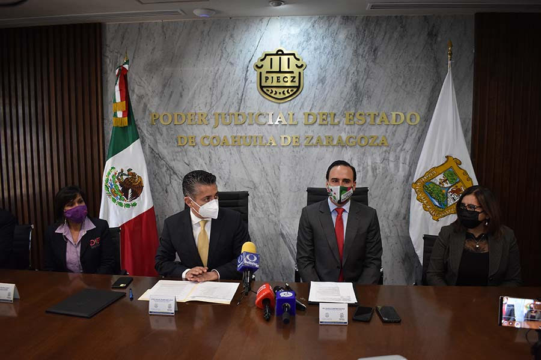
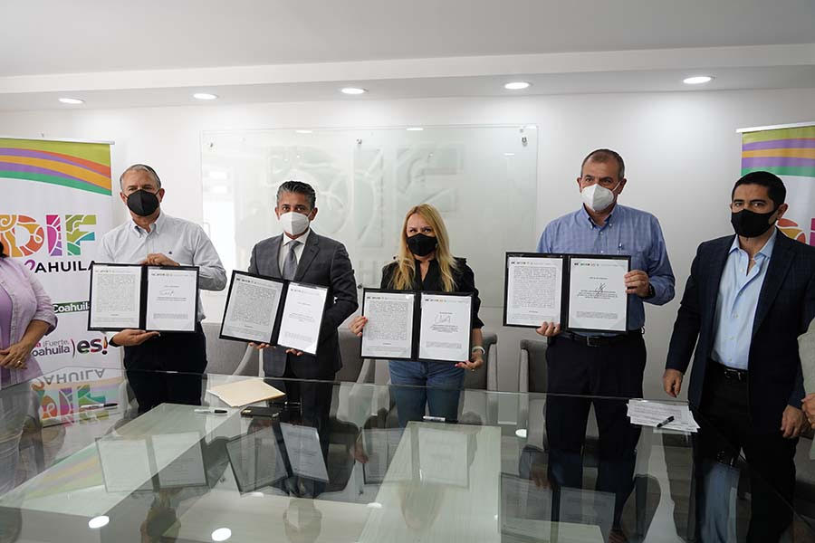
VINCULACIÓN INTERINSTITUCIONAL
Para el Poder Judicial del Estado es preponderante el establecimiento de alianzas estratégicas con instituciones públicas del orden federal, estatal y municipal, así como con organizaciones privadas. Hemos procurado, a través de acuerdos voluntarios, sumar esfuerzos que deriven en el desarrollo de un estado humanista, social y de derecho, con el propósito de garantizar a las personas un efectivo acceso a la justicia. En ese orden de ideas, durante este año logramos la suscripción de 11 convenios de colaboración interinstitucional, así como de dos acuerdos estratégicos con diversas instituciones gubernamentales y del ámbito privado.
Gracias a lo anterior logramos impulsar y fortalecer, a través de la justicia alternativa, la formación y desarrollo de los integrantes de las corporaciones de seguridad pública en el Estado; pudimos difundir y promover dentro de la comunidad los medios alternos para la solución de controversias para consolidar una cultura de paz; logramos beneficios, tanto para los servidores públicos de este Poder Judicial como para sus dependientes económicos directos, para cursar diversos programas académicos; coadyuvamos con instituciones de educación superior en la formación profesional de sus estudiantes; y generamos las condiciones necesarias para que la perspectiva de género sea una práctica abierta y transparente en este poder público, así como la consolidación de la justicia a favor de las mujeres para erradicar la violencia por razones de género.
También reforzamos el ejercicio de la potestad jurisdiccional, a través del taller de justicia digital a distancia; documentamos la implementación de los Juzgados Especializados en Violencia Familiar contra la Mujer; dimos apoyo en el desarrollo del marco del Proceso Electoral Local Ordinario 2021, por medio de la implementación de un mecanismo que permite garantizar que las personas que pretendan postularse por algún cargo de elección popular no hayan incurrido en actos, u omisiones, que violenten o afecten a una mujer a partir de su género; promovimos la mejora continua dentro de la administración de justicia en el estado, por medio de capacitación, actualización y especialización del personal jurisdiccional; promovimos la cultura de la paz para fortalecer la prevención social de la violencia; generamos coordinadamente las políticas, programas y mecanismos necesarios para instrumentar una estrategia integral para la implementación del nuevo Sistema de Justicia Laboral en Coahuila, así como el apoyo del Gobierno Federal para la implementación de la reforma en esta materia; y logramos tutelar un efectivo acceso a la justicia a personas en situación de vulnerabilidad, por medio de asistencia jurídica oportuna, integral y eficaz, así como de orientación, asesoría, intervención y representación legal; entre otros temas que sin duda han abonado al modelo de justicia que ofrecemos al día de hoy en esta entidad federativa.
Tabla 13. Convenios celebrados por el Poder Judicial del Estado de Coahuila de Zaragoza
| Instancia con la que se suscribe | Objeto del convenio | Fecha de firma |
|---|---|---|
| Secretaría de Seguridad Pública | Impulsar y fortalecer, a través de la justicia alternativa, la formación y desarrollo de los integrantes de las corporaciones de Seguridad Pública en el Estado | 16 de febrero |
| Ayuntamiento de Saltillo | Promover dentro de la comunidad los medios alternos de solución de controversias, para consolidar la cultura de la paz | 23 de febrero |
| Universidad Autónoma de la Laguna | Consolidar beneficios para los servidores públicos adscritos al Poder Judicial, así como para sus dependientes económicos directos para cursar diversos programas académicos | 8 de marzo |
| Poder Ejecutivo y Poder Legislativo del Estado de Coahuila de Zaragoza | Pacto por la Igualdad y el Acceso a las Mujeres a una Vida Libre de Violencia | 8 de marzo |
| Facultad de Jurisprudencia de la Universidad Autónoma de Coahuila | El desarrollo del taller de justicia digital, registro documental de la creación de Juzgados Especializados en Violencia Familiar contra la Mujer, y la capacitación continua de servidores públicos | 17 de marzo |
| Instituto Electoral del Estado de Coahuila de Zaragoza | Coadyuvar en el marco del Proceso Electoral Local 2021, para la implementación de los lineamientos para erradicar la violencia política contra las mujeres en razón de género | 30 de marzo |
| Universidad Iberoamericana Torreón | Fomentar la mejora continua en la administración de justicia, y coadyuvar en la formación profesional de sus estudiantes | 26 de abril |
| Secretaría de Gobierno del Estado de Coahuila de Zaragoza | Incentivar la cultura de la paz para fortalecer la prevención social de la violencia en el Estado | 27 de abril |
| Poder Ejecutivo y Poder Legislativo del Estado de Coahuila de Zaragoza | Establecer el plan de trabajo para la implementación de la reforma al sistema de justicia laboral en el estado | 1 de mayo |
| Universidad Vizcaya de las Américas | Fortalecer la administración de justicia más profesional y eficiente, así como colaborar en la formación profesional de sus estudiantes | 15 de junio |
| Congreso del Estado de Coahuila de Zaragoza, Universidad Autónoma de Coahuila, Confederación de los Trabajadores de México, y Universidad Laboral de México | Colaboración académica por parte de funcionarios del Poder Judicial para la impartición de clases de licenciaturas en línea | 12 de julio |
| Secretaría del Trabajo y Previsión Social del Gobierno Federal | Obtener el subsidio federal para la implementación de la reforma al sistema de justicia laboral en el Estado | 15 de agosto |
| Sistema DIF Coahuila e Instituto Coahuilense de las Personas Adultas Mayores | Tutelar el acceso efectivo a la justicia de todas las personas vulnerables y adultos mayores | 16 de agosto |
Fuente: Secretaría Técnica y de Transparencia de la Presidencia del Tribunal Superior de Justicia del Estado de Coahuila de Zaragoza. 2021.
COORDINACIÓN PARA LA IMPLEMENTACIÓN DE LA REFORMA LABORAL
En concertación con los tres niveles y órdenes de gobierno, y con el propósito de concretar lo proyectado dentro del Pacto Laboral, continuamos trabajando este año en la ruta hacia la implementación de la reforma laboral en nuestro estado, y de esa manera dar cumplimiento al mandato constitucional respectivo.
En ese sentido, durante 2021 proyectamos la generación de espacios adecuados que contribuyan al correcto funcionamiento de los Tribunales Laborales locales –en esta tercera etapa del proyecto a Coahuila nos corresponde hacerlo–, los cuales resultan indispensables para que la impartición de justicia laboral sea privilegiada con oralidad, inmediación, continuidad y publicidad, y que permitan una atención más rápida, eficiente y cercana a la ciudadanía.
Para atender lo anterior, debemos considerar que Coahuila es la tercera entidad con mayor extensión territorial, por lo cual, para dar una adecuada cobertura a los principales centros de población y regiones, contemplamos la creación de seis Tribunales Laborales que nos permitan impartir una justicia más ágil, expedita e imparcial en dicha materia. Por ello, en coordinación con la Secretaría del Trabajo del Gobierno del Estado, solicitamos la aprobación de un presupuesto superior a 10 millones de pesos de subsidio federal destinado a la Implementación de la Reforma al Sistema de Justicia Laboral, lo que permitió a dar inicio a la construcción de los Tribunales Laborales con sedes en los Distritos Judiciales de Monclova y Río Grande, obras que entrarán en operación para el segundo trimestre de 2022 y que, en conjunto, darán servicio a 20 de los 38 municipios del estado.
En la ruta de creación de los espacios necesarios para la implementación del nuevo modelo de justicia laboral, tomamos en cuenta características como la ubicación, accesibilidad y compatibilidad con otros servicios, entre otros factores que nos permiten la construcción, adecuación o adaptación de inmuebles conforme a los lineamientos para la impartición de justicia en materia laboral local.
Aunado a lo anterior, destacamos que en los Centros de Justicia de Acuña y de la Región Carbonífera consideramos el espacio suficiente para albergar en ambos lugares al Tribunal Laboral y al Centro de Conciliación adjunto, los cuales fueron cubiertos con recursos propios. Durante 2022 mantendremos este esfuerzo colaborativo para garantizar la entrada en vigor, en tiempo y forma, de estos nuevos órganos jurisdiccionales en favor de los justiciables.
PARTICIPACIÓN EN LA COMISIÓN NACIONAL DE TRIBUNALES SUPERIORES DE JUSTICIA DE LOS ESTADOS UNIDOS MEXICANOS Y EN LA UNIDAD DE DERECHOS HUMANOS E IGUALDAD DE GÉNERO
El Poder Judicial de Coahuila forma parte de la Comisión Nacional de Tribunales Superiores de Justicia de los Estados Unidos Mexicanos (CONATRIB), integrada por los presidentes de los 32 poderes judiciales locales, los cuales sesionan de manera ordinaria con la finalidad de establecer espacios para la generación e intercambio de ideas que abonen al mejoramiento de la administración de justicia.
En lo que respecta al 2021, el magistrado Miguel Felipe Mery Ayup asistió a cuatro asambleas ordinarias de la CONATRIB: las dos primeras de forma virtual y las dos posteriores de manera presencial.
La primera se realizó en el mes de abril, en donde se presentó y aprobó el Plan de Trabajo para los años 2021 y 2022 de la Unidad de Derechos Humanos e Igualdad de Género de CONATRIB. Posteriormente, tuvimos otra sesión en junio, en la cual el magistrado Miguel Felipe Mery Ayup tomó protesta como integrante de la Mesa Directiva, como vocal de la región noreste.
Fungimos como sede en la ciudad de Saltillo para la realización de manera presencial de la Tercera Asamblea Ordinaria del año, en el mes de agosto. En este evento contamos con la presencia de la ministra Yasmín Esquivel Mossa y la doctora Nadine Gasman, titular del Instituto Nacional de las Mujeres. Durante el desarrollo de la misma efectuamos la presentación de diversos programas de trabajo y avances que ha tenido la Unidad que presidimos.
Finalmente, cerramos el año con la participación en la Cuarta Asamblea Ordinaria llevada a cabo en Guadalajara, Jalisco, donde el magistrado Miguel Felipe Mery Ayup presentó la propuesta de crear el Fondo Nacional de Apoyo a la Administración de Justicia Local, para fortalecer la impartición de justicia en cada entidad federativa. Los recursos de dicho fondo constituirán una fuente de financiamiento distinta a los recursos que se obtienen anualmente a través de la asignación presupuestal, respondiendo al número de casos judicializados y asuntos atendidos en todas las materias, la proporción de jueces respecto a la población, número de órganos jurisdiccionales y órganos administrativos, y los asuntos recibidos en defensorías de oficio, entre otros aspectos.
Por otro lado, para su óptimo funcionamiento la CONATRIB cuenta con diversas unidades especializadas en temas de interés general en la administración de justicia. En ese sentido, una de esas unidades es la de Derechos Humanos e Igualdad de Género, que preside el magistrado Miguel Mery Ayup. Con la finalidad de empatar nuestra agenda, centrada en la persona y sus derechos, realizamos distintas reuniones de trabajo con las titulares de las Unidades de Derechos Humanos e Igualdad de Género de los poderes judiciales del resto del país, en las que abordamos temas para la creación de un camino conjunto en temas de género.
En este año también logramos la impartición de cursos de capacitación a juzgadores, secretarios y demás personal jurisdiccional de más de 20 estados, en rubros relacionados a las reformas a la Ley General de Acceso de las Mujeres a una Vida Libre de Violencia, con el apoyo de expertos en la materia que lograron la participación de mil 79 personas.
Realizamos el foro virtual denominado “El acceso a la justicia de las Mujeres”, con una amplia participación de ponentes de instituciones diversas, como la Suprema Corte de Justicia de la Nación, el Instituto Nacional de las Mujeres, la Comisión Nacional para Prevenir y Erradicar la Violencia contra las Mujeres, la Comisión Nacional de los Derechos Humanos, la Secretaría de Salud, el Centro de Estudios Socio Jurídicos Latinoamericanos, ONU Mujeres, el Tribunal Electoral del Poder Judicial de la Federación y el Instituto Nacional Electoral, entre otros, en el que asistieron más de 550 personas. Concretamos también la celebración de un conversatorio sobre sentencias en formato de lectura fácil, en colaboración con la Asociación Mexicana de Mujeres Juezas y Magistradas AC, para fortalecer su uso dentro de los órganos jurisdiccionales.
Y como parte de los compromisos asumidos en un trabajo colaborativo con la Suprema Corte de Justicia de la Nación y el Instituto Nacional de las Mujeres, participamos en la creación del programa de Justicia Itinerante para las Mujeres, cuya finalidad es establecer mecanismos y herramientas que faciliten a las mujeres el acceso a la justicia, siendo Coahuila la primera entidad en implementarlo.
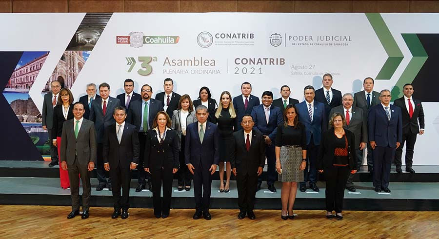
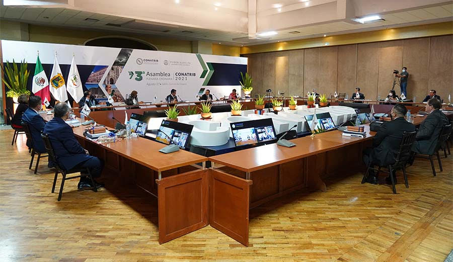
ACTIVIDADES DE LA PRESIDENCIA DEL TRIBUNAL SUPERIOR DE JUSTICIA
En cumplimiento a las responsabilidades que la Ley Orgánica del Poder Judicial del Estado establece para el titular de la Presidencia del Tribunal Superior, entre las que destaca la representación del Poder Judicial, informamos que durante este año el magistrado Miguel Felipe Mery Ayup sostuvo las reuniones y realizó los recorridos que se señalan a continuación.
Tabla 14. Actividades sostenidas por el titular de la Presidencia del Tribunal Superior de Justicia del Estado
| Reuniones, eventos y recorridos |
|---|
| Sesión solemne para la instalación de la LXII Legislatura del Congreso de Coahuila |
| Ceremonia de entrega de patrullas, en Saltillo |
| Instalación de la Junta Municipal de Seguridad Pública, en Saltillo |
| Reunión estatal del Consejo de Seguridad Pública, en Saltillo |
| Inauguración de Sala de Oralidad Mercantil, en Saltillo |
| Reunión con el Colegio de Notarios, en Saltillo |
| Inauguración de Sala de Oralidad Mercantil, en Monclova |
| Entrega de certificaciones a mediadores y facilitadores de los Distritos Judiciales de Sabinas y Monclova |
| Desayuno con magistrados en retiro |
| Tercer informe del Rector de la Universidad Autónoma de Coahuila, en Saltillo |
| Recorrido a los órganos jurisdiccionales y no jurisdiccionales del Distrito Judicial de Monclova |
| Inicio de operaciones del Centro de Justicia de Ciudad Acuña |
| Supervisión a las Salas del Sistema Integrado de Grabación Audiovisual para Juicios Orales Mercantiles, y visita al Juzgado Segundo Letrado, en Torreón |
| Reunión de trabajo con el profesor Rogerio Castro Vázquez, secretario general del INFONAVIT |
| Firma del Convenio de Colaboración con el Gobierno del Estado y la Secretaría de Seguridad Pública |
| Firma del Pacto Coahuila 2021 para la Reactivación Económica y Estabilidad Laboral, en Saltillo |
| Participación en el Foro Virtual Diálogos por la Justicia, de Equis Justicia para las Mujeres |
| Participación en el Seminario Virtual sobre la Implementación de la Justicia Digital, organizado por la Academia Mexicana de Derecho Informático AC |
| Sesión solemne del Congreso del Estado para conmemorar el Día del Ejército Mexicano |
| Firma del Convenio de colaboración con el Ayuntamiento de Saltillo |
| Participación en las conferencias sobre el Derecho al Agua de las Personas Migrantes, realizada por el Observatorio Internacional de Derechos Humanos |
| Reunión de trabajo en la Ciudad de México con la Dra. Olga Sánchez Cordero, secretaria de Gobernación, y la Lic. Paulina Téllez Martínez, titular de la Unidad de Apoyo al Sistema de Justicia, para abordar diversos proyectos relevantes del Poder Judicial del Estado de Coahuila de Zaragoza, tales como los Juzgados Especializados en Violencia Familiar, la App Mujer Segura, la Unidad de Seguimiento y Evaluación Especializada en Violencia Familiar, y la Iniciativa 3 de 3 Contra la Violencia en Coahuila con el Instituto Electoral de Coahuila |
| Presentación de resultados del año 2020, y planeación de actividades del año 2021, del Capítulo Regional de Torreón del Observatorio Judicial |
| Reunión de trabajo con personal del Programa ConJusticia de la USAID |
| Reunión con alumnos de la Facultad de Jurisprudencia de la Universidad Autónoma de Coahuila |
| Reunión de seguimiento de implementación de los Juzgados Especializados en Violencia Familiar contra la Mujer, con los presidentes de las Salas Colegiadas y la titular del Instituto Coahuilense de las Mujeres |
| Reunión de trabajo con personal del Instituto Electoral de Coahuila para la colaboración de ambas instancias en la Iniciativa 3 de 3 Contra la Violencia |
| Recorrido por el Distrito Judicial de Parras de la Fuente |
| Firma del Pacto por la Igualdad y el Acceso de las Mujeres a una Vida Libre de Violencia, con el Gobierno del Estado y el Congreso del Estado de Coahuila |
| Participación en el Conversatorio sobre prácticas innovadoras para fortalecer la emisión de las órdenes de protección, con Equis Justicia para las Mujeres. |
| Firma del Convenio de colaboración con el Congreso del Estado de Coahuila y el Instituto Coahuilense de Acceso a la Información |
| Entrega de brazaletes con sistema de localización para monitoreo, para dar seguimiento a las medidas de protección dictadas en favor de mujeres víctimas de violencia |
| Firma del Convenio de colaboración con la Facultad de Jurisprudencia de la Universidad Autónoma de Coahuila |
| Participación en programa de radio en La Líder, a fin de compartir los resultados de los Juzgados Especializados en Violencia Familiar y el Programa de Justicia Itinerante |
| Reunión de trabajo con magistrados, juezas y jueces del Distrito Judicial de Torreón |
| Inauguración de Salas de Oralidad Mercantil en el Distrito Judicial de Torreón |
| Entrega de vehículos al Instituto Estatal de Defensoría Pública, para el programa de Justicia Itinerante |
| Diálogo con el Colectivo Madres Poderosas de Torreón |
| Entrevista para Las Noticias Televisa de La Laguna, acerca de la inauguración de las Salas de Oralidad Mercantil |
| Conmemoración del Día del Archivista en el Centro de Justicia Penal de Saltillo |
| Reunión de trabajo para análisis de la reforma laboral, con personal de la Secretaría del Trabajo de Coahuila |
| Reunión de trabajo con la secretaria del Medio Ambiente en Coahuila, Eglantina Canales, sobre la implementación de la Ley de Responsabilidad Ambiental |
| Entrega de vehículos al IEDP y el CEMASC, para el Programa Justicia Itinerante en Monclova |
| Entrega de vehículos al IEDP y el CEMASC, para el Programa Justicia Itinerante en Sabinas |
| Ceremonia del 108 Aniversario de la Firma del Plan de Guadalupe, en Saltillo |
| Reunión con alumnos de la Facultad de Jurisprudencia de la Universidad Autónoma de Coahuila |
| Firma de convenio con el Instituto Electoral de Coahuila sobre la Iniciativa 3 de 3 Contra la Violencia de Género, en la Ciudad de México |
| Reunión de seguimiento a la Reforma Laboral con Secretaría del Trabajo y personal de la dependencia |
| Homenaje a Don Eliseo Mendoza Berrueto en el Palacio de Gobierno, en Saltillo |
| Entrega de vehículo al IEDP y el CEMASC, para el Programa Justicia Itinerante en Piedras Negras |
| Recorrido por el Distrito Judicial de Río Grande y atención a medios de comunicación en Piedras Negras |
| Recorrido por el Distrito Judicial de Acuña y atención a medios de comunicación |
| Gira de trabajo en el Distrito Judicial de Sabinas con litigantes |
| Presentación del plan de trabajo nacional de la Unidad de Derechos Humanos e Igualdad de Género en la Primera Asamblea de la CONATRIB |
| Firma de Convenio de colaboración entre el Congreso del Estado de Coahuila y COPARMEX Nacional |
| Firma de Convenio de colaboración académica y de vinculación institucional con la Universidad Iberoamericana Torreón, con el cual se fortalece la formación de estudiantes, se promueve la mediación en la comunidad y se posibilita la realización de actividades académicas conjuntas |
| Entrega de certificados a conciliadores y mediadores, en Torreón |
| Firma del convenio de colaboración con la Secretaría de Gobierno |
| Asamblea y toma de compromiso del Consejo Directivo 2021-2023 COPARMEX Coahuila Sureste |
| Evento para compartir sobre la implementación de la justicia digital y los Juzgados Especializados en Violencia Familiar, en las instalaciones de la Universidad Iberoamericana Torreón |
| Conmemoración del Día del Trabajo y firma del Plan de Trabajo con el Gobierno del Estado para la implementación de la Reforma en Justicia Laboral, en Saltillo |
| Entrega de las certificaciones de Juicios Orales Mercantiles y el Catálogo Nacional de Trámites y Servicios por parte del Dr. Alberto Montoya Martín del Campo, de CONAMER, en la Ciudad de México |
| Entrega de las certificaciones de Juicios Orales Mercantiles a los jueces del Estado, en Saltillo |
| Primera reunión ordinaria del Comité Técnico Especializado en Información de Impartición de Justicia, del Consejo de la Judicatura Federal, en la Ciudad de México |
| Presentación de los resultados del Modelo Coahuila en materia penal, y las políticas que se implementan en esta materia, en el Centro de Justicia Penal |
| Reunión de trabajo con magistrados distritales para revisión de resultados |
| Ponencia magistral sobre el derecho ante las tecnologías de la información y comunicaciones |
| Reunión de trabajo con el Programa ConJusticia de la USAID México, sobre el Proyecto de Política de Persecución Penal para el Estado de Coahuila |
| Reunión con la Nueva Mesa Directiva del Foro Profesional de Abogados, en Saltillo |
| Entrega de títulos Doctor Honoris Causa en Sesión solemne del Honorable Consejo Universitario de la UAdeC, y entrega de reconocimientos a los doctores Jorge Francisco Clifton Correa y Mauricio Hardie Beuchot Puente, en Saltillo |
| Reunión de seguimiento de los Juzgados Especializados en Violencia Familiar contra la Mujer, en Saltillo |
| Entrega de nombramientos a comités de trabajo y toma de protesta a las nuevas integrantes de la Asociación de Licenciadas en Derecho del Estado de Coahuila, en Saltillo |
| Ratificación del convenio de colaboración con la Universidad Vizcaya de las Américas, en Saltillo |
| Entrega de constancias del Diplomado de Justicia Penal para Adolescentes en la Universidad La Salle, en Saltillo |
| Asamblea Ordinaria de la CONATRIB y toma de protesta en su mesa directiva 2021 |
| Participación en la Ceremonia del Bicentenario de la Proclamación de la Independencia de México, en Saltillo |
| Reunión de trabajo para seguimiento de proyectos de infraestructura de Centros de Conciliación y Tribunales Laborales, con la secretaria del Trabajo de Coahuila, Nazira Zogbi Castro |
| Sesión Solemne de Cabildo del Ayuntamiento de Saltillo, con motivo del Bicentenario de la Proclamación de la Independencia de México |
| Reunión con la Mtra. Belén Sanz Duque, representante de ONU Mujeres México, y la Dra. Fabiola Alanís Sámano, comisionada nacional para Prevenir y Erradicar la Violencia contra las Mujeres en la Suprema Corte de Justicia, en la Ciudad de México |
| Presentación del Programa Estatal de Prevención, Atención, Sanción y Erradicación de la Violencia contra mujeres del Gobierno del Estado, en coordinación con la CONAVIM y ONU Mujeres |
| Participación en la mesa de trabajo para el seguimiento a políticas de acceso a la justicia y medidas de protección para las mujeres, en compañía de la ministra Yasmín Esquivel Mossa, la Dra. Nadine Gasman, directora de INMUJERES México, y el presidente de la Conatrib, Rafael Guerra Álvarez, en la Suprema Corte de Justicia de la Nación |
| Entrega de reconocimientos a abogadas y abogados destacados de barras y colegios de Coahuila, en Saltillo |
| Celebración del Día del Abogado, en Torreón |
| Firma de Convenio General de Cooperación Académica entre los Poderes Legislativo y Judicial, la Federación de Trabajadores de Coahuila de la CTM y la Universidad Autónoma de Coahuila, en Torreón |
| Presentación de la conferencia Justicia digital y modernización del Poder Judicial de Coahuila, ante el Foro de Abogados de San Pedro |
| Reunión con la Barra de Abogados y entrega de reconocimientos a abogados destacados, en Piedras Negras |
| Reunión con jueces y juezas del Distrito Judicial de Río Grande |
| Reunión con abogados de Acuña y entrega de reconocimientos al Colegio de Abogados |
| Reunión y entrega de reconocimientos a abogados y abogadas de Monclova |
| Reunión y entrega de reconocimientos a abogados y abogadas de Sabinas |
| Reunión con abogados y abogadas de Parras, en el marco de la conmemoración del Día del Abogado |
| Presentación de avances del Poder Judicial del Estado de Coahuila ante el Consejo de CANACINTRA, en Torreón |
| Presentación de la campaña ¡Ponte Trucha!, en Saltillo |
| Participación en los cursos de inducción de la Facultad de Jurisprudencia de la UAdeC, con el tema El quehacer del juzgador, en Saltillo |
| Reunión de trabajo con el magistrado del Tribunal de Justicia Administrativa, Jesús Gerardo Sotomayor Hernández, en Saltillo |
| Firma de convenio de colaboración con la Sra. Marcela Gorgón Carrillo, presidenta honoraria del DIF Coahuila, para fortalecer el programa Adultos Mayores en Abandono (AMA), en Torreón |
| Presentación de la aplicación móvil Mujer Segura, en el marco de la Tercera Asamblea Ordinaria de la CONATRIB, en Saltillo |
| Visita de supervisión a las obras del Centro de Justicia de la Región Carbonífera, en San Juan de Sabinas |
| Reunión con autoridades de la tribu Kikapú, en Múzquiz, sobre la propuesta de certificación en mediación y explicación de los sistemas normativos indígenas |
| Recorrido por el Distrito Judicial de Saltillo |
| Reunión con integrantes del Colegio de Notarios de Coahuila |
| Celebración de la ceremonia del Grito de Independencia, en Saltillo |
| Ceremonia de Inauguración de la Feria Internacional del Libro 2021 |
| Conmemoración del XV Aniversario del Centro de Evaluación Psicosocial, en el Centro de Justicia Penal de Saltillo |
| Asistencia a la Conferencia Magistral de la ministra Dra. Ana Margarita Ríos Farjat, en Saltillo |
| Reunión de seguimiento a los avances en la implementación de la Reforma Laboral, con la Secretaría del Trabajo estatal |
| Reunión de trabajo con Leonardo Escobar García, director general del programa ConJusticia de la USAID |
| Recorrido por el Distrito Judicial de Torreón |
| Reunión de trabajo con miembros de barras, colegios y foros de abogados, en Piedras Negras |
| Reunión de trabajo con miembros de barras, colegios y foros de abogados, en Acuña |
| Reunión de trabajo con miembros de barras, colegios y foros de abogados, en Sabinas |
| Reunión de trabajo con miembros de barras, colegios y foros de abogados, en Monclova |
| Reunión de trabajo con miembros de barras, colegios y foros de abogados, en Parras |
| Reunión de trabajo con miembros de barras, colegios y foros de abogados, en Torreón |
| Asistencia a la Cuarta Asamblea Plenaria Ordinaria de la CONATRIB 2021 en Guadalajara, Jalisco, y presentación de la propuesta de creación del Fondo Nacional de Fortalecimiento a la Impartición de Justicia Local |
| Rueda de prensa para anunciar la propuesta de creación del Fondo Nacional de Fortalecimiento a la Impartición de Justicia Local |
| Reunión de trabajo con diversos embajadores y representantes de países de la Unión Europea |
| Reunión con Peter Grohmann, coordinador residente del Sistema de las Naciones Unidas en México |
| Apertura del curso de capacitación y actualización para actuarios y notificadores del PJECZ |
| Asistencia a la sesión ordinaria del Consejo de Seguridad Pública, en Torreón |
| Colocación de la primera piedra del Centro de Justicia Laboral de Monclova |
| Conferencia magistral Políticas públicas para atender la violencia de género, en el Seminario de capacitación a municipios, impartida a los alcaldes electos de los 38 municipios de Coahuila |
| Presentación ante integrantes de la CANACO, en Saltillo, de los resultados del PJECZ y el nuevo modelo de Justicia Laboral |
| Reunión con magistrados, jueces y órganos no jurisdiccionales del Distrito Judicial de Torreón, para revisar resultados y presentar políticas y proyectos a implementar |
| Supervisión de la obra del Centro de Justicia de la Región Carbonífera, en San Juan de Sabinas |
| Participación en Diálogo sobre seguridad y justicia en Coahuila, de México Evalúa |
| Presentación de resultados obtenidos por el Poder Judicial ante integrantes de la CANACO-Servytur de Torreón |
| Inauguración del foro virtual El acceso a la justicia de las mujeres |
| Conferencia Juzgados Especializados en Violencia Familiar contra la Mujer de Coahuila, durante el foro virtual El acceso a la justicia de las mujeres |
| Reunión de trabajo con jueces y juezas en Materia Penal del Distrito Judicial de Saltillo, para dar seguimiento a los resultados de esta materia y la implementación de políticas del PJECZ |
| Entrega de constancias de certificación a mediadores de los Centros Comunitarios del Municipio de Saltillo |
| Reunión de trabajo con integrantes del Comité de las Naciones Unidas contra la Desaparición Forzada, con el objetivo de reforzar las políticas y estrategias para afrontar esta problemática de manera integral |
| Presentación, ante la Suprema Corte de Justicia de la Nación, del tema Juzgados Especializados en Violencia Familiar como buena práctica para prevenir y erradicar la violencia contra la mujer |
| Presentación del programa Justicia Itinerante para las Mujeres, de la mano de Inmujeres México |
| Reunión de trabajo con personal jurisdiccional y no jurisdiccional, así como con integrantes de las barras, foros y colegios de abogados, en el Distrito Judicial de Acuña |
| Supervisión de obra del Centro de Justicia de la Región Carbonífera |
| Supervisión de obra de los Tribunales Laborales del Distrito Judicial de Monclova, en el municipio de Frontera |
| Primera reunión de coordinación entre autoridades federales y locales para implementar la última etapa de la Reforma Laboral |
| Entrega de constancias para actuarios y notificadores del Poder Judicial, en Saltillo |
| Entrega de constancias para actuarios y notificadores del Poder Judicial, en Torreón |
| Asistencia a la 1ª Reunión de la Red Nacional de Archivos Judiciales, en la mesa de trabajo Diagnóstico y prospectiva de los archivos judiciales: una evolución necesaria |
| Inauguración del Centro de Justicia de la Región Carbonífera |
| Primera consulta al portal de Tesis y Jurisprudencias del Poder Judicial del Estado de Coahuila, con presencia de magistradas y magistrados |
Fuente: Presidencia del Tribunal Superior de Justicia del Estado de Coahuila de Zaragoza. 2021.
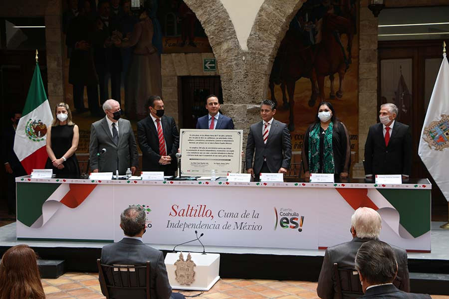
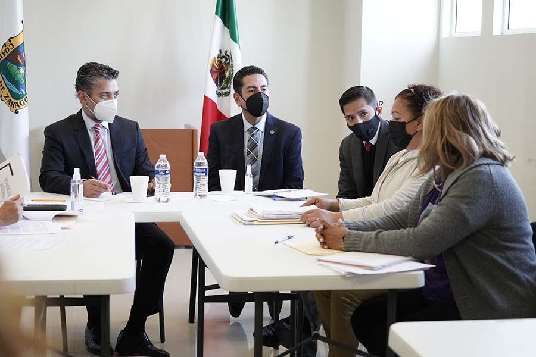
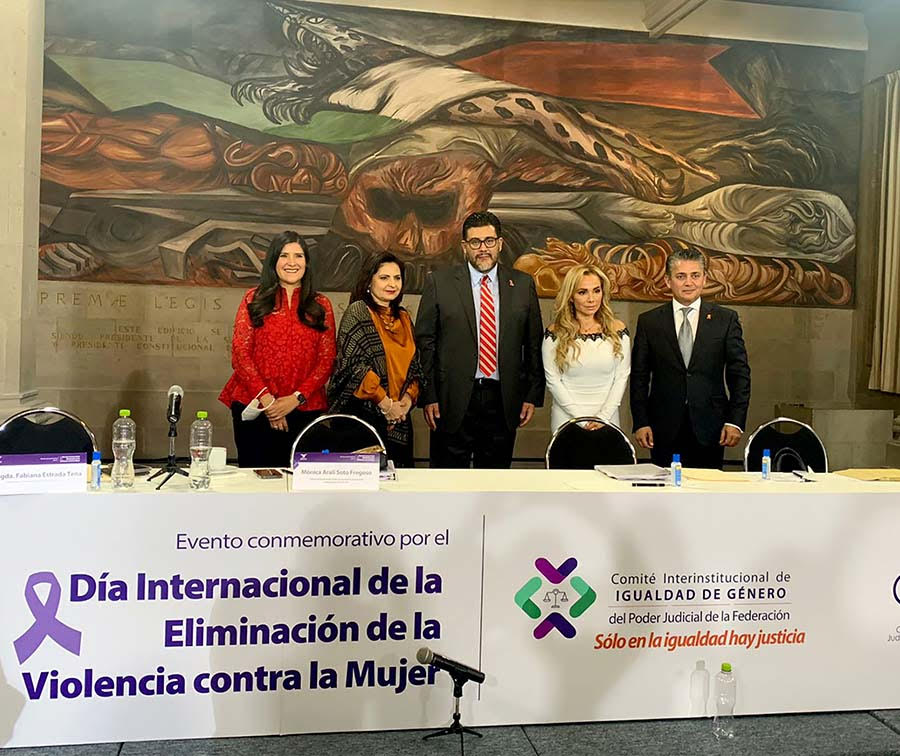
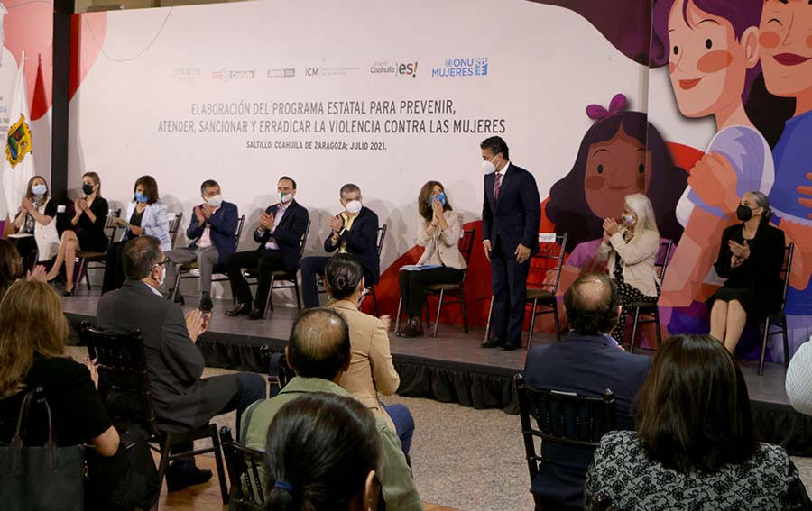
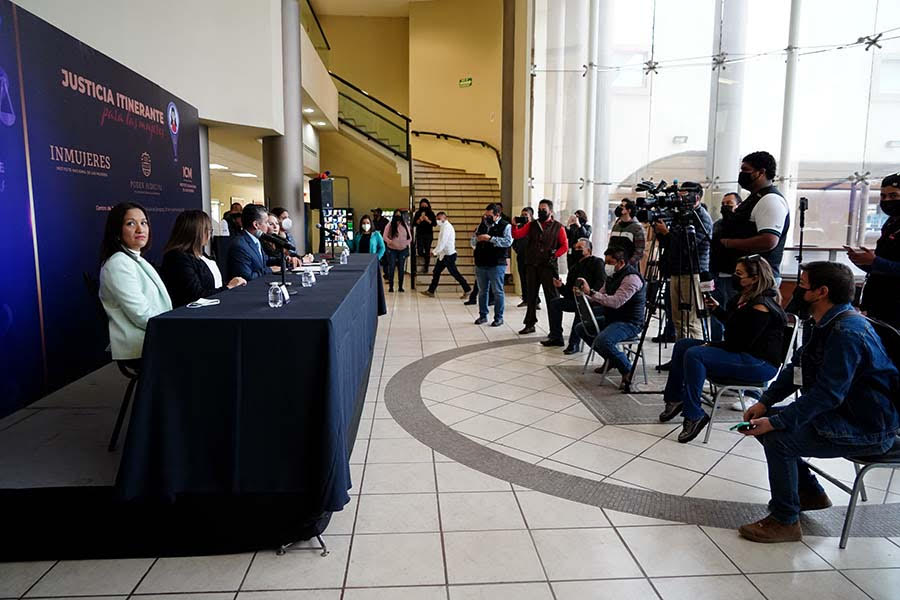
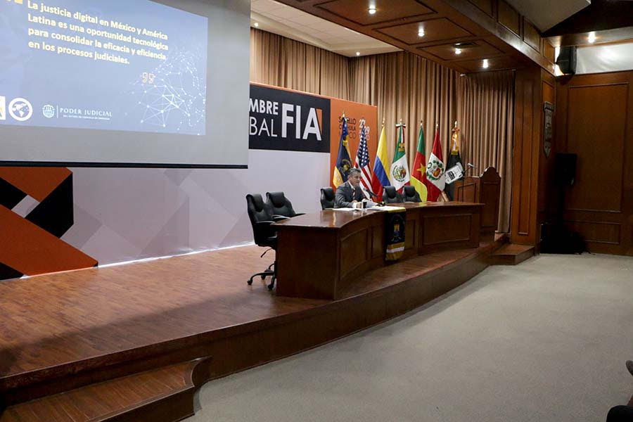
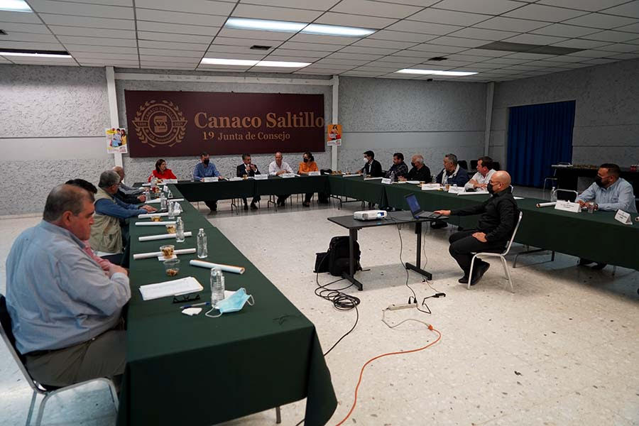
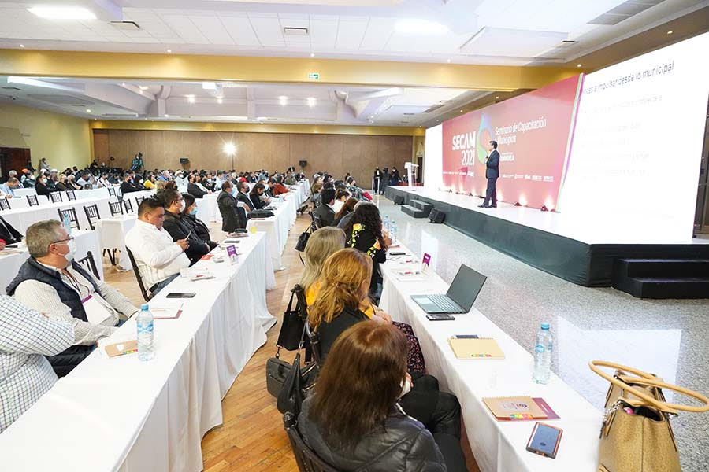
COMISIONES DEL PLENO DEL TRIBUNAL SUPERIOR DE JUSTICIA
Además de su actividad material, de naturaleza jurisdiccional en segunda instancia, las y los magistrados del Pleno del Tribunal Superior de Justicia desempeñan labores enfocadas a la atención y seguimiento puntual de diversos tópicos específicos, a través de la conformación de comisiones. Este año damos detalles de los avances más significativos logrados en ellas, gracias al esfuerzo colaborativo de los impartidores de justicia del máximo órgano colegiado en el estado.
Comisión en Materia Penal y en el Sistema de Justicia Penal Acusatorio y Oral
El trabajo desempeñado en ambas comisiones permitió lograr avances en capacitación para los jueces de los Distritos Judiciales de Torreón y San Pedro, en materia de manejo de audiencias y criterios jurisdiccionales.
También se comenzaron los trabajos del programa ConJusticia de USAID, para el fortalecimiento institucional del Sistema de Justicia Penal Acusatorio y Oral, con diversas acciones estratégicas tales como: la profesionalización en todas las áreas que engloban los operadores de justicia en este poder público, el monitoreo del modelo de gestión de los Juzgados de Primera Instancia en Materia Penal del Sistema Acusatorio y Oral en todo el estado, y la homologación de estándares administrativos y jurisdiccionales en estos órganos.
Es importante destacar que dentro de este rubro continuamos como uno de los poderes judiciales mejor evaluados en el Sistema de Justicia Penal, lo que nos ha permitido colocarnos como un referente nacional sobre buenas prácticas en la implementación del mismo, razón por la que obtuvimos reconocimientos por parte de México Evalúa y World Justice Project.
También, llevamos a cabo diversas reuniones de trabajo con asociaciones civiles, así como con barras, colegios y foros de abogados, con la finalidad de dar a conocer la competencia de los Juzgados Especializados en Violencia Familiar contra la Mujer. Esto ha permitido que las usuarias atiendan en un solo lugar las materias familiar y penal, y que tales conflictos sean abordados desde una perspectiva pluridimensional.
Continuamos con el desarrollo de mesas de trabajo con personal jurisdiccional en Materia Penal, defensores públicos y ministerios públicos, entre otros, con la finalidad de dar difusión a los criterios observados por las y los jueces en Materia Penal.
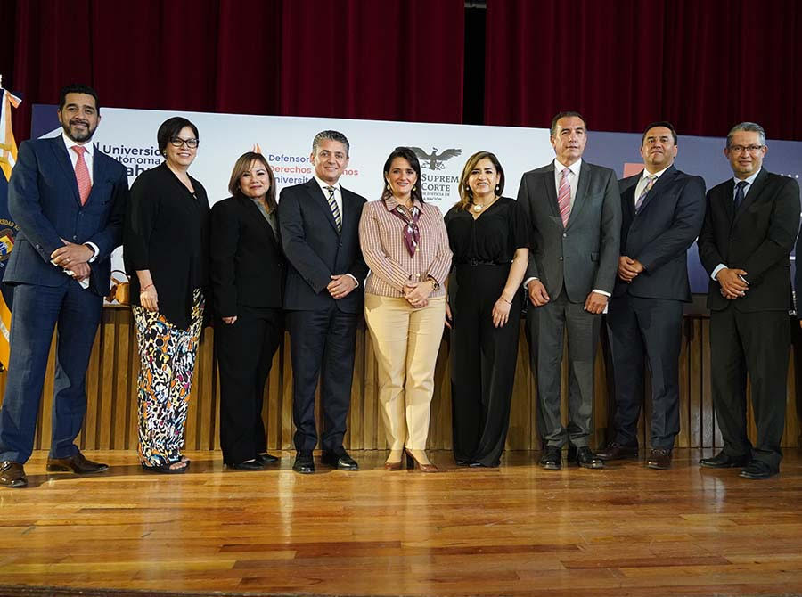
Comisión en Materia Familiar
Durante este año la Comisión en Materia Familiar concretó diversas reuniones con integrantes de foros, barras y asociaciones de abogados en Coahuila, con la finalidad de atender sus inquietudes o propuestas de mejora en cuanto a la atención de asuntos en los distintos órganos jurisdiccionales en la materia. De esta manera mantenemos el contacto directo con quienes diariamente desempeñan sus labores de litigio y representación jurídica de los justiciables, creando un canal de comunicación efectivo a favor de la sociedad.
Como un acercamiento con otros operadores del sistema de justicia, y en apoyo a su capacitación, participamos en la conferencia Juicios Orales Familiares, dirigida a personal adscrito a la Procuraduría para Niños, Niñas y la Familia del Estado (Pronnif).
También las y los magistrados que integran esta comisión, durante todo el año, realizaron constantemente conversatorios y reuniones de trabajo con juezas y jueces de Primera Instancia en Materia Familiar en los ocho distritos judiciales, en las cuales trataron asuntos como el oportuno seguimiento a la transición del sistema tradicional al oral en el Distrito Judicial de Saltillo, entre otros.
Comisión en Materia Mercantil
Quienes integran esta comisión continuaron este año con la celebración de reuniones con juzgadores en Materia Mercantil, con el propósito de homologar criterios en la resolución de los asuntos, así como dar seguimiento a la implementación de los juicios orales.
Esto nos permitió, con la valiosa colaboración de otros órganos administrativos del Poder Judicial, como la Secretaría Técnica y de Transparencia de la Presidencia del Tribunal Superior de Justicia, dar cumplimiento a los requisitos en cuanto a estándares de cobertura de juzgados, cargas de trabajo, disponibilidad de salas de audiencia y equipo móvil, sistemas tecnológicos, marco jurídico y normativo, actividades de capacitación, estadística judicial y tiempos de resolución de los asuntos. En ese sentido, logramos la Certificación en Juicios Orales Mercantiles por parte de la Comisión Nacional de Mejora Regulatoria (CONAMER), lo cual nos colocó como uno de los nueve poderes judiciales locales que cuentan con esta, ratificando nuestro compromiso de ofrecer un sistema judicial profesional y de calidad que favorezca el acceso efectivo a la justicia.
Comisión en Materia Civil
En 2021, quienes conforman esta comisión realizaron conversatorios con todos los juzgadores en Materia Civil en nuestra entidad, con la finalidad de hacer un intercambio de ideas y experiencias que favorezcan el establecimiento de criterios en asuntos de naturaleza civil. Esto otorga a la ciudadanía certeza jurídica en las resoluciones que son emitidas por los órganos jurisdiccionales, que impactan en el patrimonio de las familias coahuilenses.
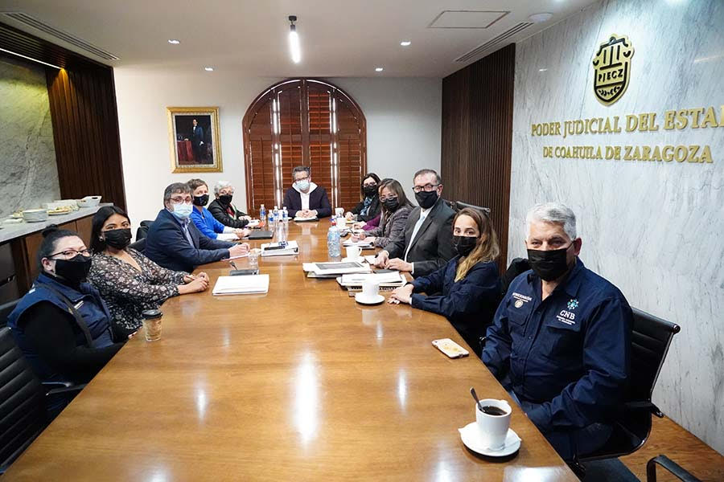
Comisión de Implementación de la Reforma en Justicia Laboral
Al interior de esta comisión se llevaron a cabo diversas reuniones a fin de preparar la entrada en vigor de la Reforma en Materia Laboral en nuestro estado. Es preciso contar con el diseño y desarrollo de la capacitación al respecto, así como la proyección de los espacios físicos que albergarán los órganos jurisdiccionales que, a partir de 2022, atenderán los asuntos laborales en Coahuila.
Comisión de Derechos Humanos
El objetivo principal de esta comisión es el de promover, respetar, proteger y garantizar los Derechos Humanos conforme dictan la Constitución Federal y los tratados internacionales de los que el Estado Mexicano es parte, así como con los más altos estándares internacionales y las mejores prácticas en la materia.
Así, durante este año se propició un diálogo con perspectiva de Derechos Humanos, que trajo como resultado la impartición de talleres, seminarios y observatorios que versaron sobre temas esenciales de Derechos Humanos y justicia. En ese sentido, se llevó a cabo el taller Juzgar con perspectiva de Derechos Humanos, edición 2021, en coordinación con la Oficina del Alto Comisionado de Naciones Unidas para los Derechos Humanos y la Academia Interamericana de Derechos Humanos, el cual se dividió en dos secciones: la primera, denominada Cátedra Antonio Berchelmann Arizpe; y la segunda, Derechos Humanos. La serie de talleres tuvo por objetivo establecer un espacio deliberativo con funcionarios judiciales, expertos en materia de Derechos Humanos y sociedad civil en general para fomentar el estudio de casos y problemas relevantes, logrando de esta manera una capacitación especializada de acuerdo con los estándares más avanzados en la materia.
Se participó también en el programa del Observatorio Internacional de Derechos Humanos 2021, I Jornada Ruth Bader Ginsburg: la voz de la justicia, donde se abordaron temas como el derecho a la disidencia judicial, el valor de la discrepancia en un tribunal, el derecho a las opiniones particulares y la transparencia judicial. En este mismo rubro se intervino en la II Jornada: el derecho al agua de las personas migrantes, respecto a los retos y desafíos del Estado Mexicano sobre este tema. Igualmente, se contribuyó en ese mismo observatorio en la jornada La violencia sexual contra la mujer: perspectiva de derecho internacional, con la materia del testimonio de la víctima en delitos de violencia sexual.
Comisión de Conversatorios en los Distritos Judiciales de Torreón y San Pedro de las Colonias
Quienes conforman esta comisión dieron continuidad a los trabajos enfocados en unificar los criterios entre juezas y jueces en ambos Distritos Judiciales. Además de la celebración de reuniones encaminadas a propiciar espacios para el diálogo, e intercambio de experiencias, que enriquecen el quehacer cotidiano de las y los juzgadores.
Comisión de Reforma a la Ley Orgánica y Reglamentos Interiores
Durante este año, esta comisión continuó sus trabajos de investigación, análisis, sistematización y elaboración de proyectos normativos destinados a apoyar la renovación integral del marco jurídico aplicable al Poder Judicial, para que, en concordancia con las acciones que se han impulsado dentro del modelo de justicia implementado, se responda a los nuevos esquemas de organización y funcionamiento, así como a los avances tecnológicos aplicados.
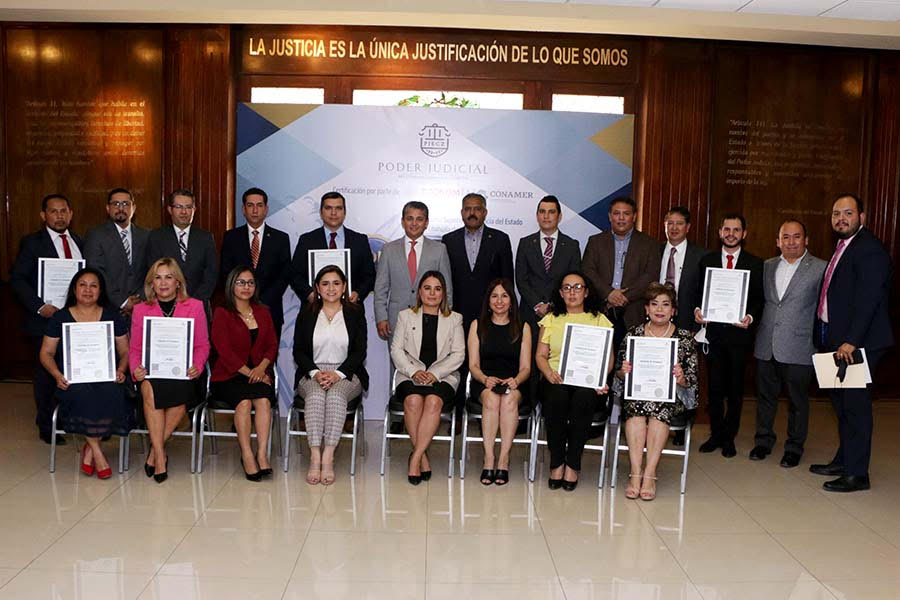
Comisión para la Sistematización de Tesis y Jurisprudencias
Este año, la Comisión para la Sistematización de Tesis y Jurisprudencias sesionó en diversas ocasiones a fin de dar continuidad a los proyectos que fueron remitidos por los órganos jurisdiccionales, facultados por la Ley Orgánica del Poder Judicial del Estado de Coahuila, para emitir tesis y jurisprudencias.
La comisión analizó que dichos proyectos estuviesen conforme a los Lineamientos para la emisión, aprobación, compilación y publicación de tesis y jurisprudencias, que fueron publicados por el presidente del Tribunal Superior, magistrado Miguel Felipe Mery Ayup, en noviembre de 2020.
En ese sentido, y una vez cubiertos los requisitos plasmados en dichos lineamientos, en el mes de diciembre se procedió a la publicación de cinco jurisprudencias emitidas por órganos como la Sala Colegiada Civil y Familiar y la Sala Regional.
Estas jurisprudencias fueron publicadas en el apartado correspondiente dentro del portal web del Poder Judicial del Estado, con la finalidad de que se encuentren disponibles en todo momento para su búsqueda por parte de las personas interesadas. Los temas sobre los que versan son:
- La no procedencia del cobro de costas judiciales en asuntos donde solo se ha sido condenado parcialmente.
- El correcto desahogo de la prueba pericial genética.
- La determinación de la competencia de los Tribunales Distritales en asuntos cuya cuantía no exceda 500 veces el salario mínimo general vigente.
- El estudio oficioso de la legitimación en asuntos de segunda instancia.
- La realización de un estudio socioeconómico para determinar el porcentaje de pensión alimenticia, de manera oficiosa.
Con lo anterior, reiteramos el compromiso de mantener en nuestro estado un modelo de justicia dotado de transparencia y cercanía con las y los ciudadanos, quienes ahora podrán conocer directamente los criterios que sustentan los órganos jurisdiccionales de este poder público, en los cuales se basan para tomar sus determinaciones. Este sistema continuará en constante actualización conforme los órganos jurisdiccionales emitan los proyectos correspondientes.
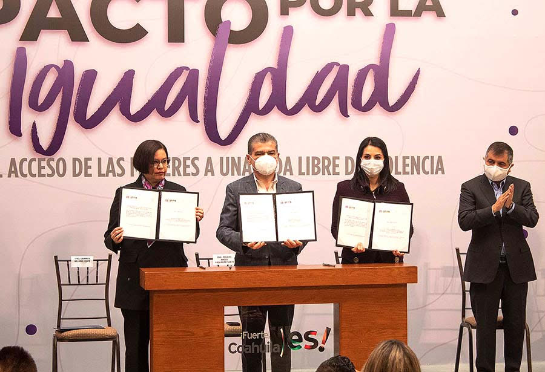
Comisión de Igualdad de Género
Las integrantes de esta comisión especializada en temas de igualdad de género trabajaron de la mano con la titular de la Unidad de Derechos Humanos e Igualdad de Género del Poder Judicial, y con las instancias gubernamentales en la materia, con el objetivo de establecer estrategias y líneas de acción que garanticen a las mujeres una efectiva igualdad en el acceso a la justicia.
Destacamos el trabajo que logró en temas relacionados con la puesta en marcha de los Juzgados Especializados en Violencia Familiar contra la Mujer en nuestro estado, como instancia encargada de proteger los derechos de las mujeres víctimas de violencia, así como de sus hijas e hijos. Además, participaron en la celebración de la firma del Pacto por la Igualdad y el Acceso de las Mujeres a una Vida Libre de Violencia, así como de la Alianza para poner fin a la violencia contra las mujeres, ambos realizados en fechas conmemorativas de temas de género.
También efectuaron una participación dentro del foro de la Iniciativa Spotlight, en el panel denominado Estadísticas mínimas para identificar el alcance de las acciones encaminadas a las sanciones de casos de violencia contra mujeres y niñas.
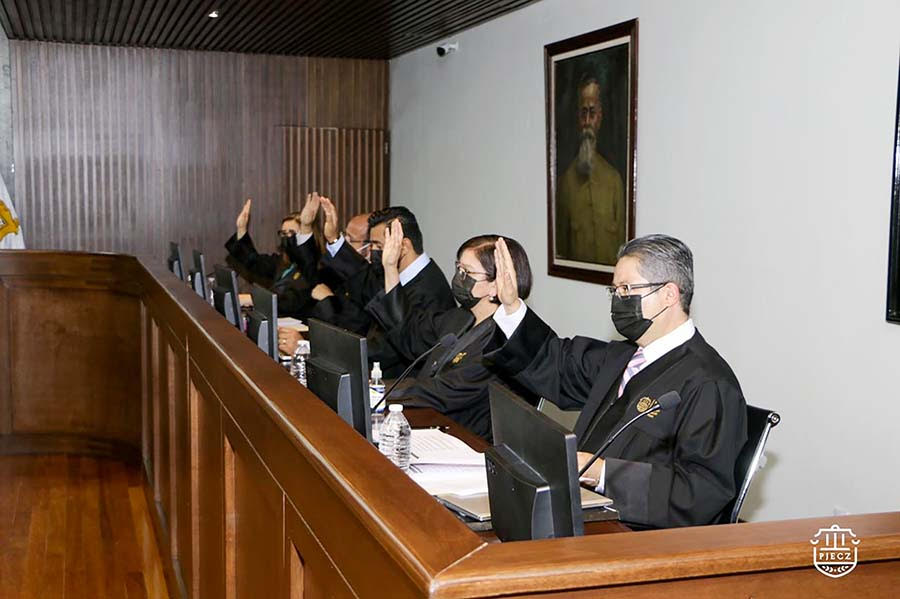
UNIDAD JURÍDICA
La Unidad Jurídica es el área adscrita a la Oficialía Mayor encargada de atender los juicios de amparo en los que esta última participe como autoridad responsable, revisar los contratos en los que forme parte el Poder Judicial, y realizar los procesos de licitaciones públicas, de invitación restringida y de adjudicación directa en materia de adquisiciones, prestación de servicios y arrendamientos, entre otros.
En lo que respecta a la materia de amparo, atendimos en 2021 un total de 12 asuntos y rendimos 14 informes de cumplimiento; además revisamos 104 contratos de prestación de servicios y 46 de servicios asimilados, así como ocho de arrendamiento y tres adendums.
Igualmente atendimos seis convenios de terminación laboral extrajudicial, ocho declaraciones de beneficiarios y 13 nuevas demandas en materia laboral, y acudimos a 93 audiencias.
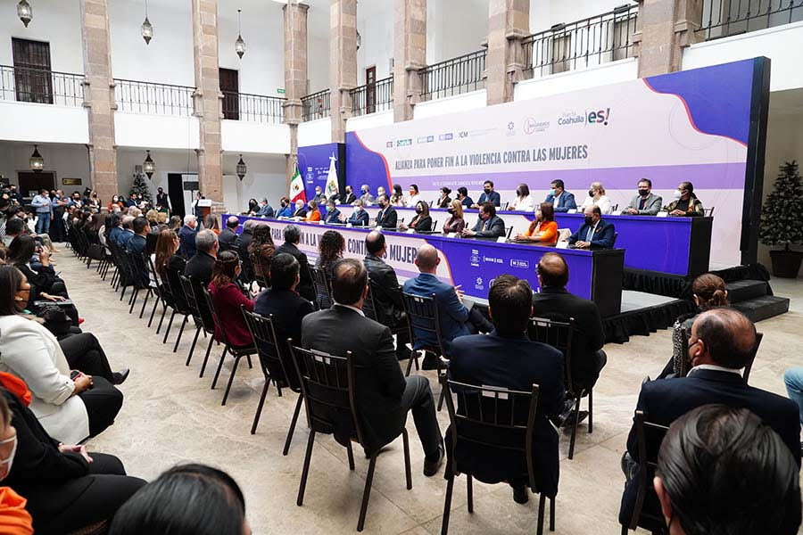